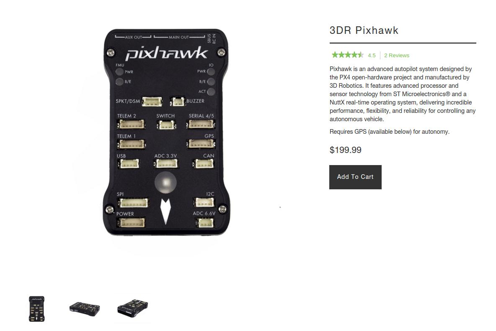
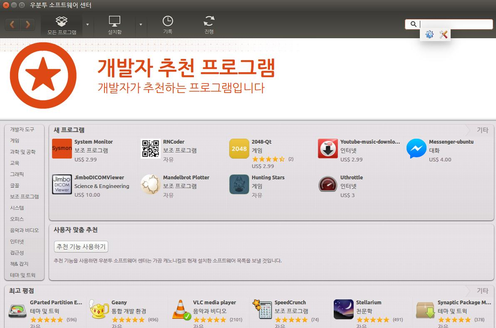
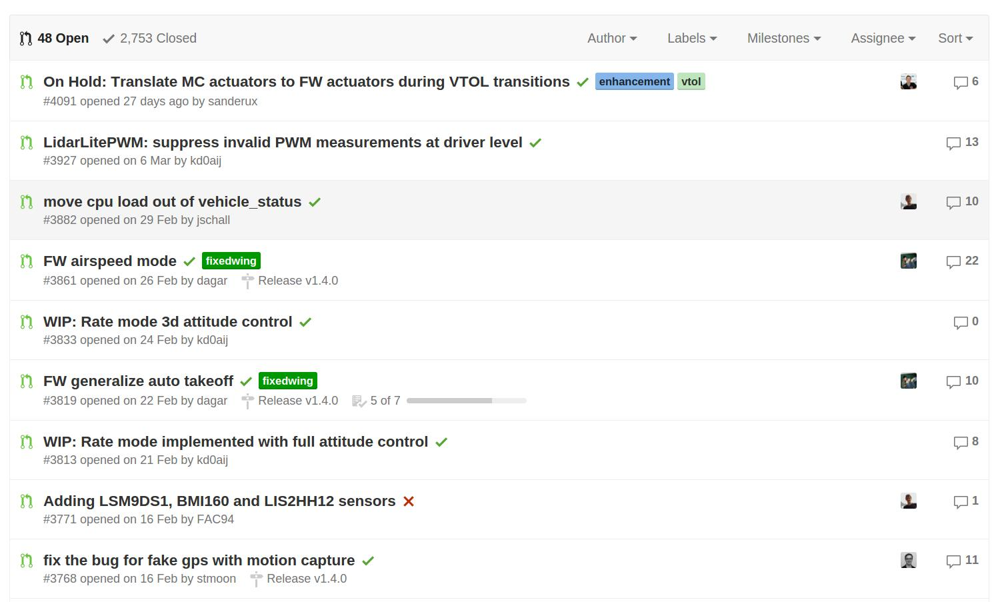

Introduction
안녕하세요 또 오랫만에 찾아뵙습니다. 요즘 많은 분들이 제가 쓴 글에 관심을 가져주셔서 정말 정말 감사합니다. 한분한분 질문하신 내용 성의껏 대답해드려야 하는데, 아는게 많이 부족하여 정확한 답변 못드리는 점 너그러이 용서해주시길 바랍니다.
자.. 오늘은 여러분들에게 이제 Pixhawk 소스 코드를 빌드해보는 것을 해보고자 합니다. 지난 강좌에서는 QGroundControl을 이용해서 단순하게 Pixhawk 펌웨어를 다운로드 받아서 비행제어컴퓨터를 동작해보았는 것을 해보았지요. 이 방법은 아주 쉽지만, 이미 만들어진 것만을 사용하기 때문에 별로 재미는 없습니다. 그럼 소스 코드를 받아서 빌드해보는 것을 해보도록 하겠습니다.
Build Environment
참 소스코드를 가지고 빌드하기 전에 빌드 환경을 먼저 살펴보아야 겠군요. 음.. 이 강좌를 설명하면서 제가 생각하는 준비물은 단순히 컴퓨터입니다. 사실 Pixhawk도 필요없습니다. 앞으로 모든 준비는 Pixhawk에서 제공하는 SITL (Software In The Loop)를 활용하여 코드를 수정해보고 동작을 보는 방법으로 할 예정이어서 굳이 Pixhawk 하드웨어 까지는 필요없습니다. 하지만, 만약 Pixhawk를 직접 활용해보고 싶다는 분은 3DR Robotics사에서 구매하시면 됩니다. Pixhawk 하드웨어에 대한 설명은 px4fmu-v2 (pixhawk)를 가지고 할 예정입니다. 따라서 만약 구매하신다면 pixhawk를 선택하시길 바랍니다. 참고로 가격은 200달러 이네요. 사신다면 GPS 모듈도 꼭 구매하시길 바랍니다. 가격은 90 달러입니다.

다음은 컴퓨터 환경입니다. 안타깝게도 여러분들에게 친숙한 윈도우를 사용하지는 않을 것 같습니다!. (죄송합니다. 제가 친숙한 환경으로 해야할 것 같아서요...) 사실 Lorenz Meier가 사용하는 Pixhawk 개발 환경도 윈도우는 아닙니다. 아마 Mac 아니면 우분투일 것 같습니다. 여러분! 오픈소스를 가지고 뭔가 작업을 하실때는 꼭 그 개발자가 사용하는 환경에 최대한 맞도록 하심이 제일 좋습니다. 물론 Pixhawk가 윈도우를 배재하고 있는 것은 아닙니다. (Window Installation Instructions 참고하세요) 하지만, 오픈소스라는 특성상 정말 많이 변화되고, 초기에는 버그도 많을 수 밖에 없습니다. 그리고 특성상 초기에 메인 개발자는 적기 때문에 큰 그림만 개발자가 그려주고 나머지는 불특정 개발자에게 의존할 수 밖에 없는 구조인것이지요. 따라서 메인 개발자가 사용하고 있는 개발 환경에 우선적인 부분이 적용되고, 다른 개발 환경은 이것을 바탕으로 알아서 해보셈~~ 하는 거지요. 따라서 최대한 불필요한 삽질을 하고 싶지 않으시다면, 윈도우 보다는 Lorenz Meier가 추천하는 리눅스 특히 우분투를 사용하시길 바랍니다. 참고로 저는 현재까지는 우분투 14.04 LTS 버전을 기반으로 개발하고 있고, 이것을 기반으로 설명할 예정입니다. (추후 우분투 버전은 바뀔수도 있습니다. 중요하진 않습니다.)
"그럼 우분투는 어떻게 설치하는건가요?"
맞습니다. 이것부터 차근차근 설명해야 하지만, 이 부분은 구글님에게 문의해보시면 엄청난 조언을 해주실 겁니다. 방금 "우분투 설치"로 검색 해보니 블로그 하나를 추천해주네요. 요즘은 정말 친절하게 잘 설명해주시는 분들이 너무 많아서 좋답니다. 감사~
우분투를 처음 써보시는 분들은 이번기회에 꼭 이 운용체제를 사용해보시길 바랍니다. 한번 맛들이면 윈도우 보다 훨~씬 쉽다고 느끼실겁니다. 절 믿고 눈 딱 감고 설치해보시면 새로운 세상이 떡~ 하니 보입니다. 진짜입니다~.
자 그럼 설치를 다 하셨다면 이제 개발 환경을 설치해봅시다. (참고로 여기서 설명드리는 내용은 pixhawk 개발자 사이트에 나와있는 내용을 각색하여 올린것입니다. 혹시 제가 잘못 올린게 있을 수 있으니, 링크된 사이트를 참조하셔서 환경 구축하시길 권고 드립니다.)
개발 환경을 설치하기 위해서는 의외로 다양한 라이브러리와 다양한 환경을 셋팅해주어야 합니다. 하지만, 중요한 것은 저희는 가져다가 쓰기만 하면 된다는 겁니다. 이미 만들어 놓은 라이브러리를 그냥 사용하여, 내가 만들고자 하는 것에만 집중하자. 뭐.. 이런 식입니다.
>> sudo add-apt-repository ppa:george-edison55/cmake-3.x -y
>> sudo apt-get update
>> sudo apt-get install python-argparse git-core wget zip python-empy qtcreator cmake build-essential genromfs -y
우분투를 잘 모르시는 분들을 위해 좀더 설명해보겠습니다. 잘 아시는 분들은 넘어가셔도 됩니다. 일단 여기에서 나오는 용어(명령어) 위주로 설명해보지요. sudo 라고 하는 것은 관리자 권한으로 수행한다는 의미입니다. 마치 윈도우에서 드라이버 설치할려면 관리자 권한으로 설치해야한다고 허락을 맡아야 하는 것처럼요. 물론 패스워드도 입력해야 합니다 add-apt-repository, apt-get 이라는 용어가 나오네요. 여기서 나오는 apt는 Advanced Packaging Tool의 약자로서 우분투에서 사용하는 패키지(프로그램,라이브러리 등으로 생각하시면 될 것 같습니다.)을 관리하는 도구라고 보시면 될 것 같습니다. 우분투는 오픈소스의 리눅스여서 대부분 무료로 프로그램 및 라이브러리 등을 배포합니다. 윈도우라면 각 사이트에 가서 다운로드 받고, 설치를 해야 하지요. 여기서는 우분투 서버에서 대부분의 패키지를 관리하여서 쉽게 설치가 가능합니다. 사용해 보시면 정말 많은 프로그램들이 있으니, 그냥 무료로 설치하여 사용하시면 됩니다. 참고로 터미널에서 명령 치는게 익숙하지 않으신 분들은 우분투 소프트웨어 센터라는 것도 있으니 여기서 검색하셔서 설치해보시는 것도 좋습니다. 무료이지만 정말 깜짝 놀랄만한 프로그램들이 많거든요.  또 약간 삼천포로 빠져들었군요. 죄송합니다. ... 암튼 우분투를 사용하시면 프로그램 설치가 이렇게 쉽다는 얘기이구요. add-apt-repository는 그런 패키지가 있는 서버를 추가한다는 의미로 이해하시면 되고, apt-get은 패키지를 얻는다는 의미입니다. 뒤에 나오는 옵션에 따라 설치, 서버 정보 갱신 등을 할수 있습니다. 우선 서버 정보를 갱신하여 자신의 컴퓨터에 그 데이터베이스를 업데이트 하기 위해 다음과 같이 수행하는 것이지요
apt-get update
데이터 베이스가 갱신이 되었다면, 이제 설치를 해보겠습니다. 설치하는 방법은 아래와 같습니다. -y 옵션은 "이거 용량이 이정도인데 정말 설치할까요" 뭐 이런거 물어보는 것을 "됐고, 그냥 설치해" 라고 으름장 내는 정도로 생각하시면 될 것 같습니다.
apt-get install [패키지 이름] (-y)
그렇다면 다시 앞으로 들어가서 설치해야 할 패키지들은 이정도 되는군요. 물론 다음에 시뮬레이션을 위해 또... 설치해야할 것들이 있지만요.
python-argparse git-core wget zip python-empy qtcreator cmake build-essential genromfs
설치할 패키지들이 많죠? 만약 이런 패키지들 도움없이 만들었다면? 정말 끔찍하겠지요? 이게 소프트웨어 만드는 방법입니다. 다시 말씀드리지만, "애써서 만들어 놓은거 그냥 가져다 쓰자" 입니다.
또 각설하고, 내용을 보니 python이라는 용어가 있구요. git 라는 용어도있군요. 파이썬... 이건 정말 대단한 언어 중 하나입니다. 여기서는 특별히 설명안하겠지만, 정말 중요한 언어이고 아주 쉬운 언어입니다. 나중에라도 꼭 사용해보시길.. git 이건 전에 설명했으니깐 아실거구요. wget 이것은 ftp로 다운로드 받는 명령어입니다. 압축 프로그램인 zip도 나오는군요. 내부에서 압축을 사용한다는 의미겠지요.
qtcreator도 나오네요. 앞으로 저희가 사용한 개발 툴입니다. 노키아에서 만든 QT라는 라이브러리가 있는데 정말 굉~장히 대단한 라이브러리여서 C++ 언어임에도 불구하고 한번 코딩하면 리눅스, 윈도우, 맥, 안드로이드 등에 그대로 활용할 수 있습니다. 더 중요한 것은 전산쪽에서 말하면 정말 객체 지향적인 스타일로 만들었다는 거지요. 하지만 Pixhawk가 QT를 사용한다는 것은 아니고 단순히 qt 개발 툴인 qt creator를 여기서도 사용한다는 의미입니다. 이 개발툴도 visual studio처럼 정말 잘 만들어져있습니다.
다음은 cmake가 있네요. make의 진보된 버전 정도라고 보시면됩니다. 리눅스에서 컴파일할 때 도와주는 것이 make라고 보시면 됩니다. 예를 들어 프로그램 개발을 위해 10개의 cpp 파일과 .h로 만들었다고 하지요. 그러면 컴파일 하기위해서는 10번의 컴파일을 거쳐 링크를 하는 등의 불편한 상황에 있을 수 있겠네요. 거기다가 버전별로 컴파일을 다르게 해주라 등의 상부지시가 있으면 어떻게 할까요? 왠만하면 스크립트 파일을 만들어서 자동화 시켜놓아서 해결하는 것입니다 make는 그런 단순 작업을 쉽게 처리해 주는 좋은 툴이라고 보시면 됩니다. visual studio에서 프로젝트 만들면 visual studio가 관리해주는 것처럼요. cmake는 make의 이런 기능에 크로스 플랫폼을 더한 것이라고 보면 됩니다. 그래서 앞에 "c"가 더 붙은거지요.
다음은 build-essential이군요. 이것은 단순히 개발 환경 구축을 위해 필수적으로 필요한 것들(예를 들어 기본 C 라이브러리)을 설치해주는 것이라고 보시면 됩니다. genromfs는 ROM 파일시스템을 생성시켜주는 프로그램이라고 보시면 됩니다. Pixhawk는 내부에 자체 파일 시스템이 있습니다. 파일 시스템이라고 하는 것은 윈도우를 예를 들면, 디렉토리 및 파일들을 관리해주는 시스템이라고 보시면됩니다. 즉 파일을 만들기 위한 기반 시스템이지요. Pixhawk도 내부에 로그 파일이나 스크립트 파일등을 가지고 있기 때문에 필요합니다. 이정도로 이해하시고 명령을 실행시키면 됩니다. 다시 한번 말씀드리지만, 우리가 원하는 것은 Pixhawk 내부 구조 및 알고리즘이므로, 그것을 위해 필요한 것으 수단과 방법을 가리지 않고 가져다 쓴다는 주의로 오픈소스를 활용하시면 됩니다.
일단 여기까지 하시면 Pixhawk에 대한 펌웨어 빌드 환경은 끝입니다. 하지만 우리는 앞으로 시뮬레이션을 통해 Pixhawk를 분석할 예정이오니, 시뮬레이션을 위한 필요 라이브러리 및 프로그램 설치가 또 필요하겠군요. 우선 다음과 같습니다.
>> sudo apt-get install ant protobuf-compiler libeigen3-dev libopencv-dev openjdk-7-jdk openjdk-7-jre clang-3.5 lldb-3.5 -y
여러 라이브러리를 설치하겠다는 얘기이구요. 간단하게 각 라이브러리 및 프로그램에 대해 설명드리겠습니다.
우선, 각 라이브러리 설명에 앞서 Pixhawk의 시뮬레이션에 대해 설명드리겠습니다. Pixhawk는 크게 두가지의 시뮬레이션 환경을 제공합니다. 첫번째는 HILS로 jMAVSim이 제공되고, SITL로 gazebo 기반 시스템을 제공합니다. HILS는 Hardware In the Loop Simulation을 나타내고, SITL은 Software In The Loop를 의미합니다. HILS는 HITL (Hardware In The Loop)로도 쓰이기도 합니다. 어떤 분들은 이건 HILS가 아니고, PILS(Processor In the Loop Simulatio) 라고도 말씀해주시는 분들도 있지만, 여기서는 Pixhawk 개발자가 정의한 용어를 그대로 따르도록 하겠습니다.
암튼, HILS인 jMAVSim은 앞에 있는 "j"에서 아실수 있는 것 처럼 JAVA로 개발되었구요. MAVLink를 사용하기 때문에 "MAV"를 사용했고, "Sim"인 시뮬레이션이라나느 의미입니다. 따라서 JAVA를 컴파일을 위해 JAVA의 make와 같은 역할인 ant가 설치되어야 합니다. 그리고 JAVA 라이브러리 설치를 위해 openjdk-7-jdk와 openjdk-7-jre를 설치합니다. 리눅스에서는 JAVA 라이브러리로 openjdk와 oraclejdk를 제공하고 있지만 여기서는 openjdk를 사용했군요. "7"은 버전을 나타냅니다.
한편, gazebo기반 시뮬레이션을 위해서는 gazebo를 설치해야합니다. 여기서는 우선 설치하지 않을것이고 추후에 다시 gazebo 기반 시뮬레이션 부분을 다시 설명드리겠습니다. 그 외에 컴퓨터 비전 관련 부분이 필요해서 libopencv-dev 라이브러리를 설치합니다. eigen3는 vector와 matrix와 같은 수학 연산을 위해 사용되는 라이브러리입니다. 이를 위해 libeigen3-dev를 설치합니다. 여기서 보시는 둘다 "-dev"로 끝나는군요. 이것은 개발용이라는 의미이고, 그냥 라이브러리가 아닌 디버깅이 가능한 라이브러리 버전도 포함이라고 보시면 될 것 같습니다. 다음으로 protobuf-compiler라는것도 있군요. protobuf라는 것은 이것은 구글에서 개발한 라이브러리인데, 통신할때 사용하는 프로토콜을 쉽게 개발할 수 있도록 해주는 툴이라고 보시면 될것 같습니다. 프로토콜에 대한 정의를 XML을 통해서 하면 그걸 가지고 여러 언어로 프로토콜을 개발할 수 있게 되는 것이지요. 참 편하지요. 네트워크 프로토콜을 만들어 보신 분들은 이해하시겠지만, 이거 정말 귀찮은 노가다거든요. 그런데 이미 이런 오픈 소스를 사용하면 쉽게 할 수가 있게 된거죠. 요즘 들어 느끼는 것은 "아.. 정말 내가 생각해보고 있던 것은 다 개발이 되었구나" 이고, 또 "아 이미 내가 생각해 놓은 것이 개발되었다면, 잘 찾기만 하면 연구가 쉬워지겠구나"입니다. 결국 얼마나 내가 필요한 것을 잘 찾을 수 있을까가 관건인것 같습니다. 그 외에도 clang이라고 있는데, 이것은 우리가 일반적으로 사용하는 여러 언어인 C, C++, Object-C와 같은 프로그래밍 언어를 대체하고자하는 것을 목적으로 갖고있습니다. 저도 이것은 아직 써보지 못해 정확히는 잘 모르겠네요. lldb는 디버거의 한 종류라고 보시면 될 것 같습니다.
자 여기까지 하셨으면, 일단 시뮬레이션 기반으로 Pixhawk 동작시키기 위한 펌웨어 빌드 환경을 마무리한 것 같습니다.
Pixhawk 하드웨어 펌웨어 빌드 환경 (옵션)
만약, 여러분에게 Pixhawk 하드웨어가 있으시다면, 이제 Pixhawk에 맞춰 컴파일 해야하는 몇가지 작업을 더 하셔야합니다.
우선, 시리얼 포트 연결 권한을 주도록 하기 위해 user mode를 변경합니다. 이제 매번 펌웨어 업로드 할때마다 관리자 권한을 추가 안해도 됩니다.
sudo usermod -a -G dialout $USER
다음으로 우분투에서 관리하는 시리얼 포트 관리를 제거하시고요.
sudo apt-get remove modemmanager
그 다음은 ARM계열의 Pixhawk에 맞춰 컴파일 할 수 있도록 크로스 컴파일 환경을 만들어주어야 합니다.
sudo add-apt-repository ppa:terry.guo/gcc-arm-embedded -y
sudo apt-get update
sudo apt-get install python-serial openocd \
flex bison libncurses5-dev autoconf texinfo build-essential \
libftdi-dev libtool zlib1g-dev \
python-empy gcc-arm-none-eabi -y
Pixhawk는 ARM 계열 CPU를 사용하기 때문에 크로스 컴파일이라는 것을 해야합니다. 컴파일이라고 하는 것은 인간이 알 수 있는 정도의 언어 (예를 들면, C언어 C++ 언어)를 컴퓨터가 알아들을수 있는 언어 (0,1로 된 바이너리, 기계어)로 변환을 해주는 것입니다. 그런데 각각 컴퓨터의 뇌와 같은 부품인 CPU가 제작 회사마다 틀리다는 것이지요. 우리가 주로 사용하는 컴퓨터는 인텔 같은 회사에서 개발한 x86 CPU를 사용하는데, Pixhawk 내부는 ARM 계열의 MCU (여기선 단순히 CPU)를 사용한다는 것이지요. 문제는 저희가 가지고 있는 컴퓨터와 Pixhawk 내부 컴퓨터의 CPU가 틀리다는 것입니다. 따라서 컴파일 시 자신의 컴퓨터가 아닌 상대방 컴퓨터에 맞게 변화시켜서 컴파일 해주어야 하는데, 그게 바로 크로스 컴파일입니다. 이 환경을 만들어 주어야 합니다. gcc-arm-none-eabi 설치가 그런 내용입니다. 그외에도 여러가지가 있지만 여기서 설명은 생략하겠습니다.
Source Code Download
휴~ 이제 여기까지 해서 Pixhawk 동작을 위한 개발 환경을 구축하였군요 이제 소스코드를 직접 받아 빌드를 해볼 시간입니다. 전 강좌에서 잠깐 말씀드렸다시피 Pixhawk의 코드 관리는 github를 사용하고 있습니다. 따라서 소스 코드를 받기 위해서는 github를 통해 아래와 같이 다운로드 받을 수 있습니다. (아직 다운로드 받지 마세요)
git clone https://github.com/PX4/Firmware.git
전에도 한번 말씀드린 것 같은데, Pixhawk 소스 코드 관리에서는 git에서 제공하는 기능 중 branch를 사용합니다. 쉽게 말씀드리면, 개발자용 버전과 일반 사용자 버전 처럼 비슷한 코드인데 관리를 다르게 두는 기능이라고 보시면 될것 같습니다. 암튼!, pixhawk는 master 버전과 stable 버전으로 크게 나누어져 배포되고 있습니다.
master 버전은 개발자용 버전이라고 보시면 됩니다. 따라서 하루에도 몇번씩 버전업이 된 싱싱한 소스코드를 받아볼 수 있지요. 하지만, 아무래도 여러 개발자가 직접 개발하여 올리다보니, 버그가 있을 수 있고, 실제 비행 시험을 해보지 않는 버전이라 안정적이지 못합니다. 물론 요즘은 여러가지 검사 기능을 추가하여 많이 안정적으로 바뀌고 있습니다. 실제로 어떤 기능을 추가하여 적용할려면 소스 코드 포맷 부터 여러 테스트를 거쳐 정상 동작되는 것에 한에서만, 관리자들이 확인하여 소스 코드에 적용하고 있습니다. 실제 pull requests를 보시면 여러 수정된 부분들이 코드에 적용되기 위해 기다리고 있는게 보입니다.

보시면 녹색으로 체크된 게 보이시나요? 이건 자동 검사를 무사히 마친거라고 보시면 됩니다. 제일 아래쪽에 보시면 제가 수정한 부분도 아직 대기중에 있는게 보입니다. 중간에 보시면 빨간색으로 X 표시된 것도 보이시나요? 이건 자동검사를 실패했다는 뜻입니다. 이런건 관리자들이 주석을 달아주기도 하지만, 대부분 보지 않습니다. 따라서 코드 공헌을 하고 싶으시면 꼭 체크해주시길 바랍니다.처음 하시는 분들은 코드 수정해놓곤, "아 이제 끝이다"라고 하지만, 이 자동 검사 결과를 잘 보셔야 합니다. 이게 정상 동작해야 다음 단계로 올라갈 수 있다는 것이니깐요.
stable 버전은 설명에 의하면 비행 시험까지 완료된 버전이라고 적혀있습니다. 하지만, 정확하지는 않구요. 물론 비행시험은 해보았겠지만, 모든 형태의 비행기에 탑재해보진 않았을테니깐요. 어찌되었든 안정된 버전은 맞습니다. 그래서 전 강좌에서 qgroundcontrol을 통해 받은 버전이 바로 이 stable 버전이라고 보시면 됩니다. stable 버전은 버전업이 될때 마다 tag로 꼬리표를 매겨줍니다. 현재 확인해 보니 가장 최신 stable 버전이 1.2.0이 군요. 물론 그전 tag를 보면 1.1.0, 1.0.0 등의 버전등이 있겠지요? 자. 그래서 우리는 매번 바뀌는 master 버전이 아니라 stable 버전을 가지고 앞으로 계속 설명을 할려고 합니다.
앞에서 잠깐 적어드린 것처럼 받으면 기본이 master 버전을 받도록 되어 있습니다. 따라서 stable 버전으로 받아야합니다. 특히, 우리는 1.2.0 버전입니다.
자 그럼 버전 1.2.0으로 다운로드 받아보겠습니다.
git clone https://github.com/PX4/Firmware.git --branch v1.2.0
여기서, "--branch"는 특정 태그 혹은 branch를 받겠다는 의미라고 이해하시면 됩니다.
만약 잘 받으셨다면 이런 식의 내용을 보실 수 있습니다.
>>> git clone https://github.com/PX4/Firmware.git --branch v1.2.0
Cloning into 'Firmware'...
remote: Counting objects: 195322, done.
remote: Compressing objects: 100% (294/294), done.
Rceiving objects: 59% (115240/195322), 48.94 MiB | 1.45 MiB/s
~
만약 태그 이름을 잘못 적으셨다면, 아래와 같은 에러를 보실 수 있겠네요
>>> git clone https://github.com/PX4/Firmware.git --branch v1.2.011
Cloning into 'Firmware'...
fatal: Remote branch v1.2.011 not found in upstream origin
Unexpected end of command stream
자 여기까지 잘 따라오고 계시나요? 제가 혹 잘못 적을 수도 있고, 예기치못한 문제가 발생할 수 있으니, 말씀해주시면 수정하도록 하겠습니다.감솨합니다.~
사실 이것을 하면서 git에 대한 설명을 따로 한번 설명해드려야 하는데, 일단 중간중간 설명을 해드리겠습니다. 필요하시면 git에 대해 미리 예습하시면 더욱 좋구요. 사실 오픈소스를 이용하실려면 아니, 프로그램 하실려면 코드관리는 필수입니다. 이거 모르시면 서울가실때 KTX타고 갈 것을 경운기 몰고 올라가실수 있습니다. 이거 아는것과 모르는 것은 정말 하늘과 땅 차이니깐 반드시 익숙해지시길 바랍니다.
자... 이제 다 받으셨으면 아래와 같은 비슷한 내용이 터미널 창에 나올 것 같군요. 이러게 나오셨나요? 음..
>>> git clone https://github.com/PX4/Firmware.git --branch v1.2.0
Cloning into 'Firmware'...
remote: Counting objects: 195322, done.
remote: Compressing objects: 100% (294/294), done.
remote: Total 195322 (delta 192), reused 2 (delta 2), pack-reused 195026
Receiving objects: 100% (195322/195322), 78.31 MiB | 4.72 MiB/s, done.
Resolving deltas: 100% (145663/145663), done.
Checking connectivity... done.
Note: checking out 'f5efe0afb013e9e28ae305519824e0276aa33ff9'.
You are in 'detached HEAD' state. You can look around, make experimental
changes and commit them, and you can discard any commits you make in this
state without impacting any branches by performing another checkout.
If you want to create a new branch to retain commits you create, you may
do so (now or later) by using -b with the checkout command again. Example:
git checkout -b new_branch_name
아래쪽에 보시면 영어로 뭐라고 나오는데, 아래와 같은 문구가 나오네요. 이게 뭘까요? 참 어렵네요.. 이거 중요한 것이긴 한데 조금 있다가 설명하겠습니다. 넘아가시죠
git checkout -b new_branch_name
일단 코드 받은 것 부터 볼까요? 기본적으로는 디렉토리가 Firmware라는 디렉토리가 생성되었을 것입니다. 이 안으로 들어가보지요.
>>> cd Firmware/
>>> ls
CMakeLists.txt Makefile integrationtests posix-configs
CONTRIBUTING.md NuttX launch src
Debug README.md mavlink template_.cproject
Documentation ROMFS misc template_.project
Firmware.sublime-project Tools msg unittests
Images Vagrantfile nuttx-configs
LICENSE.md cmake package.xml
음. 뭔가 잔뜩 받아놓았군요. 앞으로 여러분은 이 코드들에 대해 하나하나 파헤쳐나갈 것 같군요.. 긴장하세요.. ㅋㅋ (사실 제가 더 긴장 중입니다. 저도 모르는 내용이 너무 많아서 ㅜㅜ)
Build
이제 빌드를 해볼려고 합니다. 참 저도 중간 중간 컴파일과 빌드를 조금 혼용해서 쓰고 있는데, 용어를 간단히 말씀드리면, 컴파일은 소스 코드를 기계어로 번역하는 것을 의미하구요. 빌드는 번역된 것을 죄다 보아서 하나의 실행 파일로 만드는 것을 의미합니다. 요즘은 두개의 나누는게 크게 의미가 없어지고 있지만, 어찌되었든 그렇다는 겁니다. 이제 make를 통해 컴파일과 함께 빌드까지 할 것입니다. make는 두개를 동시에 해주기 때문이지요. 대부분의 IDE 툴도 컴파일과 빌드를 동시에 해줍니다.
네.. 약간 삼천포로 빠졌지만 각설하고, 빌드해보겠습니다. 빌드는 아래와 같이 make를 통해서 할 수 있습니다.
make [build target]
여기에서 "build target"이라고 하는 것은 Pixhawk에서 제공하는 다양한 빌드 타겟이 있어서 거기에 맞춰 빌드를 해야하기 때문입니다. 실제로 pixhawk는 날이 거듭되면서 이제 다양한 하드웨어가 나오고 있습니다. px4fmu라는 공식 명칭을 쓰고 그 다음은 버전을 씁니다. 예를 들어 빌드 타겟으로 px4fmuv1, px4fmuv2, ... 이 사용됩니다. 현재 공식적인 px4fmu의 버전은 v1,v2, v4가 있습니다. 저희가 사용하기로 한 것은 v2이고 이것을 pixhawk라고 부릅니다. 참. 그리고 마지막으로 default라는것이 있는데, 이것은 내부에 들어가는 알고리즘에 따라 몇개의 타입을 만들어 놓앗습니다. 예를 들면 extension kalman filter를 사용할때는 ekf라고 쓰고, local position estimation을 사용할려면, lpe를 씁니다. 앗.. 갑자기 요상한 용어들을 나열했군요. 일단 그냥 그런게 있구나 하고 생각하시면 됩니다. 암튼, pixhawk 하드웨어를 가지고 있는 분은 아래와 같이 빌드하시면 됩니다.
>>> make px4fmu-v2_default
=======
>>> make px4fmu_v2_default
>>>>>>> cc03c2dc49583cd4c338ed8deac8292b7c044592
그리고, 앞으로 저희가 사용할 하드웨어 없이 시뮬레이션 기반으로 하는 것은 posix 로 시작하는 것을 사용합니다. 이는 ARM 계열이 아닌 X86 계열에 주로 사용하는 것이라는 뜻이라고 보시면 될 것 같습니다. 엄밀하게 따지면, posix라는 표준을 따르는 운영체제에서 동작되도록 하는 것을 의미합니다. 그리고 다음으로 sitl이라고 있습니다. 이 용어는 익숙하시지요? 맞습니다. Software In The Loop라는 뜻으로 시뮬레이션을 위해 만든것입니다. 다음으로 default는 앞에서 말씀드린 것과 일맥상통합니다.
>>> make posix_sitl_default
휴~~ 이제 드디어 빌드 시작합시다. 엔터를 잽싸게 때려주세욧!
빌드하는 과정을 보니, 현재 몇 퍼센트 진행중인지 등등이 나오는 군요. 엄청 빨리 진행되니, 잘 보시길 바랍니다.
>>> make posix_sitl_default
[ 1%] Generating git_init_Tools_gencpp.stamp
Generating git_init_Tools_genmsg.stamp
Generating git_init_src_lib_matrix.stamp
[ 2%] Built target git_genmsg
[ 2%] Built target git_gencpp
Built target git_matrix
[ 2%] Scanning dependencies of target git_mavlink
Scanning dependencies of target git_uavcan
~생략~
98%] Building C object src/modules/systemlib/CMakeFiles/modules__systemlib.dir/param/param.c.o
[100%] Building C object src/modules/systemlib/CMakeFiles/modules__systemlib.dir/print_load_posix.c.o
[100%] Building C object src/modules/systemlib/CMakeFiles/modules__systemlib.dir/hx_stream.c.o
Linking CXX static library libmodules__fw_pos_control_l1.a
[100%] Built target modules__fw_pos_control_l1
Linking CXX static library libmodules__systemlib.a
[100%] Built target modules__systemlib
Scanning dependencies of target mainapp
[100%] Building CXX object src/firmware/posix/CMakeFiles/mainapp.dir/__/__/platforms/posix/main.cpp.o
Linking CXX executable mainapp
[100%] Built target mainapp
100 빠센트를 보신분 있으시나요? 그럼 정말 잘하신 것입니다. 짝짝짝.. 그런데 안타깝게도 몇몇 분들은 분명 에러가 발생하실 수 있습니다. 여기서부터가 조금 문제입니다. 제가 물론 빼먹었을 가능성도 높구요. 또 운영체제 구조가 틀려서 그럴수도 있습니다. 너무 많은 질문을 제가 다 처리할 수 없기 때문에 가능한 열심히 한번 삽질을 해보셔야 할 것같군요.. 삽질이 시간 소비라고 생각하시지 마시고, 능력을 키울 수 있으니, 꼭 한번 해보세요.
그래도 정 안된다. 그러면, 전에 말씀드린 구글 그룹
에도 문의를 해보시고, 게시판에도 올려주시면 저도 최선을 다해 도와드리겠습니다.
마치며..
자 여기까지 되신 분들은 정말 대단하신 분들입니다. 자신에게 토닥토닥 해주시길... 사실 이번 강좌에 gazebo 연동해서 SITL까지 할려고 했는데, 시간이 많이 지체되는 것 같아, 빌드하는 것까지만 올리고, 다음 강좌에 gazebo 연동해서 동작하는 것을 올려야 할 것 같습니다. 제가 좀더 부진런히 올려야 하는데, 자꾸 늦어지네요. 빌드 환경 꾸미는 것이 사실 말처럼 쉽지 않습니다. 그래서 아마 제가 급히 작성을 해서 일부 틀린 내용이 있을 수 있으니, 댓글 적어주시면 계속 업데이트 하도록 하겠습니다. 지금까지 읽어주셔서 너~무 감사합니다.